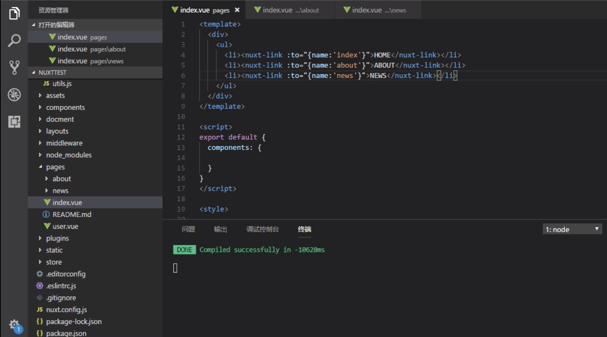

<!DOCTYPE html>
<html lang="en" style="height:100%">
    
<head>
    <meta charset="UTF-8">
    <meta name="viewport" content="width=device-width, initial-scale=1">
    <meta name="generator" content="向宇的博客 | Xiang Yu&#39;s Blog">
    <title>About Nuxt Router and Params - 向宇的博客 | Xiang Yu&#39;s Blog</title>
    <meta name="author" content="Xiang Yu">
    
        <meta name="keywords" content="hexo,javascript,front-end,">
    
    
        <link rel="icon" href="https://kisky3.github.io/assets/images/pic.jpg">
    
    
        <link rel="alternate" type="application/atom+xml" title="RSS" href="/atom.xml">
    
    <script type="application/ld+json">{"@context":"http://schema.org","@type":"BlogPosting","author":{"@type":"Person","name":"Xiang Yu","sameAs":["https://github.com/Kisky3","/categories/About-Me","kisky3@126.com"],"image":"me.png"},"articleBody":"关于Nuxt路由设置及传参\n\n首先在pages路径下建立about.vue，news.vue，和index.vue文件，并在index.vue里引用三个link\n运行打开页面可以发现路由生效，并可以通过a标签进行跳转。\n下面我们利用nuxt的写法，将a标签写成下面的形式：\n1&lt;nuxt-link :to = &quot;&#123;name: &apos;index&apos;&#125;&quot;&gt;HOME&lt;/nuxt-link&gt;\n\n\n\n打开画面验证，效果是一样的。\n下面进行画面间的传参。在给news的link上传一个参数params的对象，newsId = 3306\n1&lt;nuxt-link :to = &quot;&#123;name: &apos;news&apos;, params:&#123;newsId:3306&#125;&#125;&quot;&gt;HOME&lt;/nuxt-link&gt;\n\n\n然后在news.vue里接受参数，并显示。在这里是使用双花括号进行显示，也可以通过js里进行设置之后再显示。\n1&#123;&#123;$router.params.newsId&#125;&#125;\n\n\n\n运行，打开页面，发现传递的参数newsId已经被news页面接受到并成功显示\b了。\n以上!！\n","dateCreated":"2019-12-08T20:33:18+09:00","dateModified":"2021-03-20T00:50:36+09:00","datePublished":"2019-12-08T20:33:18+09:00","description":"关于Nuxt路由设置及传参","headline":"About Nuxt Router and Params","image":[],"mainEntityOfPage":{"@type":"WebPage","@id":"https://kisky3.github.io/2019/12/08/AboutNuxtRouter/"},"publisher":{"@type":"Organization","name":"Xiang Yu","sameAs":["https://github.com/Kisky3","/categories/About-Me","kisky3@126.com"],"image":"me.png","logo":{"@type":"ImageObject","url":"me.png"}},"url":"https://kisky3.github.io/2019/12/08/AboutNuxtRouter/","keywords":"Nuxt.js, Router"}</script>
    <meta name="description" content="关于Nuxt路由设置及传参">
<meta name="keywords" content="Nuxt.js,Router">
<meta property="og:type" content="blog">
<meta property="og:title" content="About Nuxt Router and Params">
<meta property="og:url" content="https://kisky3.github.io/2019/12/08/AboutNuxtRouter/index.html">
<meta property="og:site_name" content="向宇的博客 | Xiang Yu&#39;s Blog">
<meta property="og:description" content="关于Nuxt路由设置及传参">
<meta property="og:locale" content="en">
<meta property="og:image" content="https://kisky3.github.io/2019/12/08/AboutNuxtRouter/1.png">
<meta property="og:image" content="https://kisky3.github.io/2019/12/08/AboutNuxtRouter/2.png">
<meta property="og:image" content="https://kisky3.github.io/2019/12/08/AboutNuxtRouter/3.png">
<meta property="og:image" content="https://kisky3.github.io/2019/12/08/AboutNuxtRouter/4.png">
<meta property="og:image" content="https://kisky3.github.io/2019/12/08/AboutNuxtRouter/5.png">
<meta property="og:updated_time" content="2021-03-19T15:50:36.727Z">
<meta name="twitter:card" content="summary">
<meta name="twitter:title" content="About Nuxt Router and Params">
<meta name="twitter:description" content="关于Nuxt路由设置及传参">
<meta name="twitter:image" content="https://kisky3.github.io/2019/12/08/AboutNuxtRouter/1.png">
    
    
        
    
    
        <meta property="og:image" content="https://kisky3.github.io/assets/images/me.png"/>
    
    
    
    
    <!--STYLES-->
    <link rel="stylesheet" href="/assets/css/style-txbv5drjurwncpxzv0lwwxgxavlzvpof5vrmy1qtqmjcvn9vllzopibimgon.min.css">
    <!--STYLES END-->
    
    <script async src="https://www.googletagmanager.com/gtag/js?id=UA-143035141-1"></script>
    <script>
        window.dataLayer = window.dataLayer || [];
        function gtag(){dataLayer.push(arguments);}
        gtag('js', new Date());

        gtag('config', 'UA-143035141-1');
    </script>


    
</head>

    <body style="margin: 0; height:100%">
        <div id="blog">
            <!-- Define author's picture -->


    
        
            
        
    

<header id="header" data-behavior="3">
    <i id="btn-open-sidebar" class="fa fa-lg fa-bars"></i>
    <div class="header-title">
        <a class="header-title-link" href="/ ">向宇的博客 | Xiang Yu&#39;s Blog</a>
    </div>
    
        
            <a  class="header-right-picture "
                href="#about">
        
        
            
        
        </a>
    
</header>

            <!-- Define author's picture -->


        
    

<nav id="sidebar" data-behavior="3">
    <div class="sidebar-container">
        
            <div class="sidebar-profile">
                <a href="/#about">
                    
                </a>
                <h4 class="sidebar-profile-name">Xiang Yu</h4>
                
                    <h5 class="sidebar-profile-bio"><p>Front-end DeveloperDeveloper</p>
</h5>
                
            </div>
        
        
            <ul class="sidebar-buttons">
            
                <li class="sidebar-button">
                    
                        <a  class="sidebar-button-link "
                             href="/ "
                            
                            title="Home"
                        >
                    
                        <i class="sidebar-button-icon fa fa-home" aria-hidden="true"></i>
                        <span class="sidebar-button-desc">Home</span>
                    </a>
            </li>
            
                <li class="sidebar-button">
                    
                        <a  class="sidebar-button-link "
                             href="/all-categories"
                            
                            title="Categories"
                        >
                    
                        <i class="sidebar-button-icon fa fa-bookmark" aria-hidden="true"></i>
                        <span class="sidebar-button-desc">Categories</span>
                    </a>
            </li>
            
                <li class="sidebar-button">
                    
                        <a  class="sidebar-button-link "
                             href="/all-tags"
                            
                            title="Tags"
                        >
                    
                        <i class="sidebar-button-icon fa fa-tags" aria-hidden="true"></i>
                        <span class="sidebar-button-desc">Tags</span>
                    </a>
            </li>
            
                <li class="sidebar-button">
                    
                        <a  class="sidebar-button-link "
                             href="/all-archives"
                            
                            title="Archives"
                        >
                    
                        <i class="sidebar-button-icon fa fa-archive" aria-hidden="true"></i>
                        <span class="sidebar-button-desc">Archives</span>
                    </a>
            </li>
            
        </ul>
        
            <ul class="sidebar-buttons">
            
                <li class="sidebar-button">
                    
                        <a  class="sidebar-button-link " href="https://github.com/Kisky3" target="_blank" rel="noopener" title="GitHub">
                    
                        <i class="sidebar-button-icon fab fa-github" aria-hidden="true"></i>
                        <span class="sidebar-button-desc">GitHub</span>
                    </a>
            </li>
            
                <li class="sidebar-button">
                    
                        <a  class="sidebar-button-link "
                             href="/categories/About-Me"
                            
                            title="Diaries"
                        >
                    
                        <i class="sidebar-button-icon fa fa-book" aria-hidden="true"></i>
                        <span class="sidebar-button-desc">Diaries</span>
                    </a>
            </li>
            
                <li class="sidebar-button">
                    
                        <a  class="sidebar-button-link "
                             href="/kisky3@126.com"
                            title="Mail"
                        >
                    
                        <i class="sidebar-button-icon fa fa-envelope" aria-hidden="true"></i>
                        <span class="sidebar-button-desc">Mail</span>
                    </a>
            </li>
            
        </ul>
        
            <ul class="sidebar-buttons">
            
                <li class="sidebar-button">
                    
                        <a  class="sidebar-button-link "
                             href="/atom.xml"
                            
                            title="RSS"
                        >
                    
                        <i class="sidebar-button-icon fa fa-rss" aria-hidden="true"></i>
                        <span class="sidebar-button-desc">RSS</span>
                    </a>
            </li>
            
        </ul>
        
    </div>
</nav>

            
            <div id="main" data-behavior="3"
                 class="
                        hasCoverMetaIn
                        hasCoverCaption">
                
<article class="post">
    
        <span class="post-header-cover-caption caption">Hello World, Hello Programming</span>
    
    
        <div class="post-header main-content-wrap text-left">
    
        <h1 class="post-title">
            About Nuxt Router and Params
        </h1>
    
    
        <div class="post-meta">
    <time datetime="2019-12-08T20:33:18+09:00">
	
		    Dec 08, 2019
    	
    </time>
    
        <span>in </span>
        
    <a class="category-link" href="/categories/Front-end-Knowledge/">Front-end Knowledge</a>


    
</div>

    
</div>

    
    <div class="post-content markdown">
        <div class="main-content-wrap">
            <p>关于Nuxt路由设置及传参</p>
<a id="more"></a>
<p>首先在pages路径下建立about.vue，news.vue，和index.vue文件，并在index.vue里引用三个link<br><br><br></p>
<p>运行打开页面可以发现路由生效，并可以通过a标签进行跳转。</p>
<p>下面我们利用nuxt的写法，将a标签写成下面的形式：</p>
<figure class="highlight plain"><table><tr><td class="gutter"><pre><span class="line">1</span><br></pre></td><td class="code"><pre><span class="line">&lt;nuxt-link :to = &quot;&#123;name: &apos;index&apos;&#125;&quot;&gt;HOME&lt;/nuxt-link&gt;</span><br></pre></td></tr></table></figure>



<p>打开画面验证，效果是一样的。</p>
<p>下面进行画面间的传参。在给news的link上传一个参数params的对象，newsId = 3306</p>
<figure class="highlight plain"><table><tr><td class="gutter"><pre><span class="line">1</span><br></pre></td><td class="code"><pre><span class="line">&lt;nuxt-link :to = &quot;&#123;name: &apos;news&apos;, params:&#123;newsId:3306&#125;&#125;&quot;&gt;HOME&lt;/nuxt-link&gt;</span><br></pre></td></tr></table></figure>


然后在news.vue里接受参数，并显示。在这里是使用双花括号进行显示，也可以通过js里进行设置之后再显示。
<figure class="highlight plain"><table><tr><td class="gutter"><pre><span class="line">1</span><br></pre></td><td class="code"><pre><span class="line">&#123;&#123;$router.params.newsId&#125;&#125;</span><br></pre></td></tr></table></figure>


<p>运行，打开页面，发现传递的参数newsId已经被news页面接受到并成功显示了。<br><br><br></p>
<p>以上!！</p>

            

        </div>
    </div>
    <div id="post-footer" class="post-footer main-content-wrap">
        
            <div class="post-footer-tags">
                <span class="text-color-light text-small">TAGGED IN</span><br/>
                
    <a class="tag tag--primary tag--small t-link" href="/tags/Nuxt-js/">Nuxt.js</a> <a class="tag tag--primary tag--small t-link" href="/tags/Router/">Router</a>

            </div>
        
        
            <div class="post-actions-wrap">
    <nav>
        <ul class="post-actions post-action-nav">
            <li class="post-action">
                
                    
                    <a class="post-action-btn btn btn--default tooltip--top" href="/2019/12/08/gulp/" data-tooltip="About Gulp" aria-label="PREVIOUS: About Gulp">
                
                    <i class="fa fa-angle-left" aria-hidden="true"></i>
                    <span class="hide-xs hide-sm text-small icon-ml">PREVIOUS</span>
                </a>
            </li>
            <li class="post-action">
                
                    
                    <a class="post-action-btn btn btn--default tooltip--top" href="/2019/12/08/howtomodifynuxtserverstartport/" data-tooltip="Set Nuxt.js Options" aria-label="NEXT: Set Nuxt.js Options">
                
                    <span class="hide-xs hide-sm text-small icon-mr">NEXT</span>
                    <i class="fa fa-angle-right" aria-hidden="true"></i>
                </a>
            </li>
        </ul>
    </nav>
    <ul class="post-actions post-action-share">
        <li class="post-action hide-lg hide-md hide-sm">
            <a class="post-action-btn btn btn--default btn-open-shareoptions" href="#btn-open-shareoptions" aria-label="Share this post">
                <i class="fa fa-share-alt" aria-hidden="true"></i>
            </a>
        </li>
        
            
            
            <li class="post-action hide-xs">
                <a class="post-action-btn btn btn--default" target="new" href="https://www.facebook.com/xiang.yu.39794" title="Share on Facebook">
                    <i class="fab fa-facebook" aria-hidden="true"></i>
                </a>
            </li>
        
            
            
            <li class="post-action hide-xs">
                <a class="post-action-btn btn btn--default" target="new" href="http://service.weibo.com/share/share.php?&amp;title=https://kisky3.github.io/2019/12/08/AboutNuxtRouter/" title="global.share_on_movies">
                    <i class="fa file-video" aria-hidden="true"></i>
                </a>
            </li>
        
        
        <li class="post-action">
            
                <a class="post-action-btn btn btn--default" href="#" aria-label="Back to top">
            
                <i class="fa fa-list" aria-hidden="true"></i>
            </a>
        </li>
    </ul>
</div>


        
        
    </div>
</article>


                <footer id="footer" class="main-content-wrap">
        <script async src="//busuanzi.ibruce.info/busuanzi/2.3/busuanzi.pure.mini.js"></script>
        Page Views:<span id="busuanzi_value_site_pv"></span><span id="busuanzi_container_site_pv"></span>
        <span class="post-meta-divider">|</span>
        Visitors:<span id="busuanzi_value_site_uv"></span><span id="busuanzi_container_site_uv"></span>
        <br>
    <span class="copyrights">
        Copyrights &copy; 2021 Xiang Yu. All Rights Reserved.
    </span>
</footer>

            </div>
            
                <div id="bottom-bar" class="post-bottom-bar" data-behavior="3">
                    <div class="post-actions-wrap">
    <nav>
        <ul class="post-actions post-action-nav">
            <li class="post-action">
                
                    
                    <a class="post-action-btn btn btn--default tooltip--top" href="/2019/12/08/gulp/" data-tooltip="About Gulp" aria-label="PREVIOUS: About Gulp">
                
                    <i class="fa fa-angle-left" aria-hidden="true"></i>
                    <span class="hide-xs hide-sm text-small icon-ml">PREVIOUS</span>
                </a>
            </li>
            <li class="post-action">
                
                    
                    <a class="post-action-btn btn btn--default tooltip--top" href="/2019/12/08/howtomodifynuxtserverstartport/" data-tooltip="Set Nuxt.js Options" aria-label="NEXT: Set Nuxt.js Options">
                
                    <span class="hide-xs hide-sm text-small icon-mr">NEXT</span>
                    <i class="fa fa-angle-right" aria-hidden="true"></i>
                </a>
            </li>
        </ul>
    </nav>
    <ul class="post-actions post-action-share">
        <li class="post-action hide-lg hide-md hide-sm">
            <a class="post-action-btn btn btn--default btn-open-shareoptions" href="#btn-open-shareoptions" aria-label="Share this post">
                <i class="fa fa-share-alt" aria-hidden="true"></i>
            </a>
        </li>
        
            
            
            <li class="post-action hide-xs">
                <a class="post-action-btn btn btn--default" target="new" href="https://www.facebook.com/xiang.yu.39794" title="Share on Facebook">
                    <i class="fab fa-facebook" aria-hidden="true"></i>
                </a>
            </li>
        
            
            
            <li class="post-action hide-xs">
                <a class="post-action-btn btn btn--default" target="new" href="http://service.weibo.com/share/share.php?&amp;title=https://kisky3.github.io/2019/12/08/AboutNuxtRouter/" title="global.share_on_movies">
                    <i class="fa file-video" aria-hidden="true"></i>
                </a>
            </li>
        
        
        <li class="post-action">
            
                <a class="post-action-btn btn btn--default" href="#" aria-label="Back to top">
            
                <i class="fa fa-list" aria-hidden="true"></i>
            </a>
        </li>
    </ul>
</div>


                </div>
                
    <div id="share-options-bar" class="share-options-bar" data-behavior="3">
        <i id="btn-close-shareoptions" class="fa fa-times"></i>
        <ul class="share-options">
            
                
                
                <li class="share-option">
                    <a class="share-option-btn" target="new" href="https://www.facebook.com/xiang.yu.39794">
                        <i class="fab fa-facebook" aria-hidden="true"></i><span>Share on Facebook</span>
                    </a>
                </li>
            
                
                
                <li class="share-option">
                    <a class="share-option-btn" target="new" href="http://service.weibo.com/share/share.php?&amp;title=https://kisky3.github.io/2019/12/08/AboutNuxtRouter/">
                        <i class="fa file-video" aria-hidden="true"></i><span>global.share_on_movies</span>
                    </a>
                </li>
            
        </ul>
    </div>


            
        </div>
        


    
        
    

<div id="about">
    <div id="about-card">
        <div id="about-btn-close">
            <i class="fa fa-times"></i>
        </div>
        
            
        
            <h4 id="about-card-name">Xiang Yu</h4>
        
            <div id="about-card-bio"><p>Front-end developer living in Tokyo     Chinese &amp; Japanese &amp; English</p>
</div>
        
        
            <div id="about-card-job">
                <i class="fa fa-briefcase"></i>
                <br/>
                <p>Front-end developer</p>

            </div>
        
        
            <div id="about-card-location">
                <i class="fa fa-map-marker-alt"></i>
                <br/>
                Tokyo
            </div>
        
    </div>
</div>

        
        
<div id="cover" style="background-image:url('/assets/images/cover.jpg');"></div>

        <!--SCRIPTS-->
<script src="/assets/js/script-wqqb8bbbj9igtm4n3bzccarnx9r51u7u12cdzdqad027xmgqdfsi77py0qap.min.js"></script>
<!--SCRIPTS END-->


    <script src="/live2dw/lib/L2Dwidget.min.js?094cbace49a39548bed64abff5988b05"></script><script>L2Dwidget.init({"pluginRootPath":"live2dw/","pluginJsPath":"lib/","pluginModelPath":"assets/","tagMode":false,"log":false,"model":{"jsonPath":"/live2dw/assets/assets/hijiki.model.json"},"display":{"position":"right","width":150,"height":300},"mobile":{"show":true},"react":{"opacity":0.9}});</script></body>
</html>
